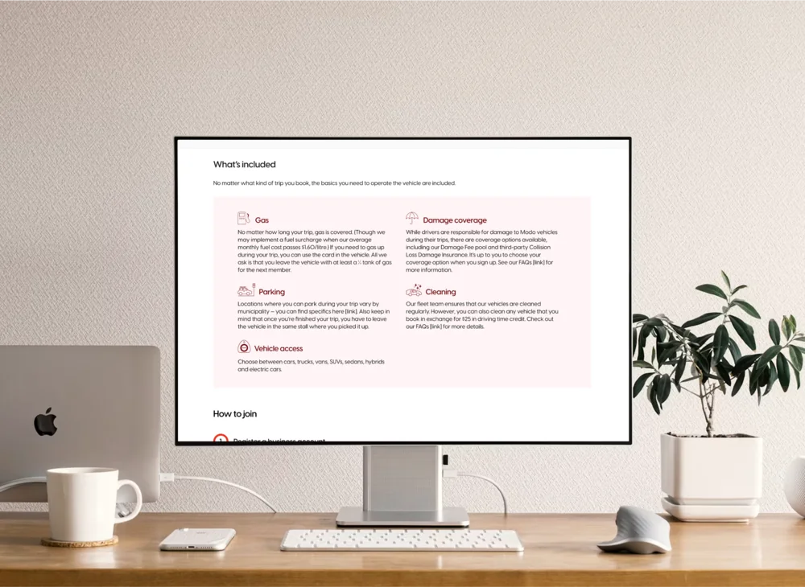
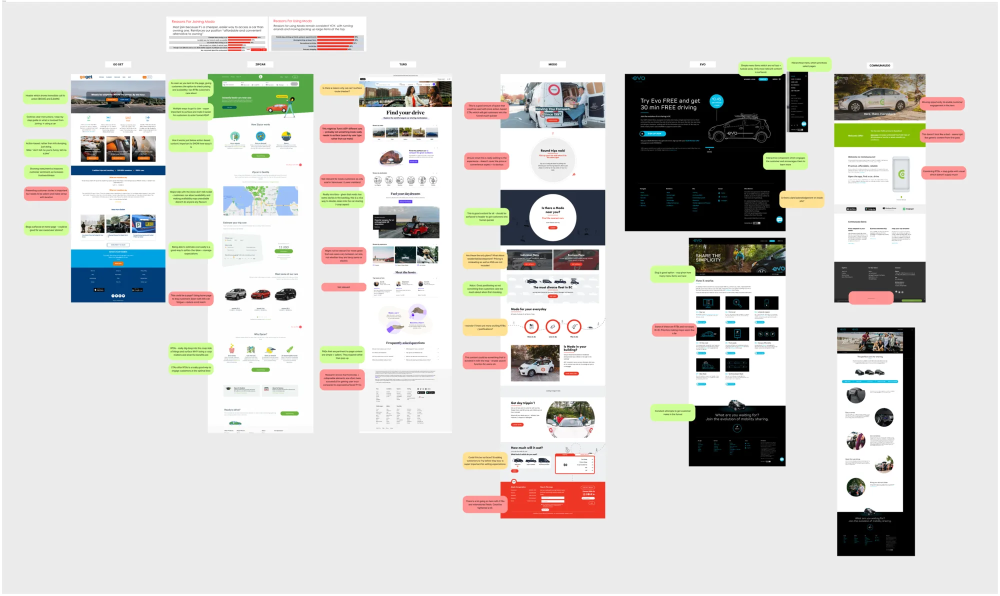
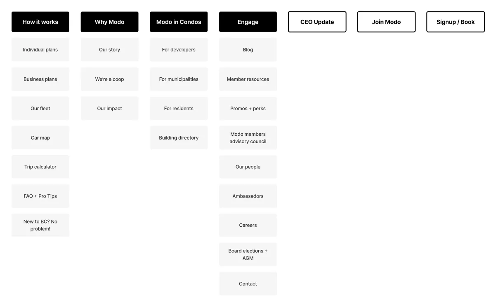
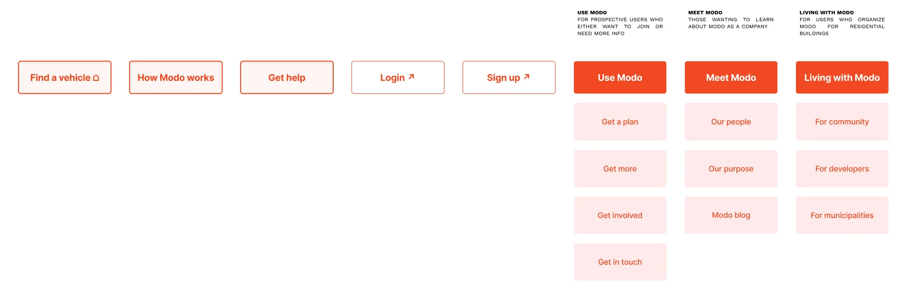
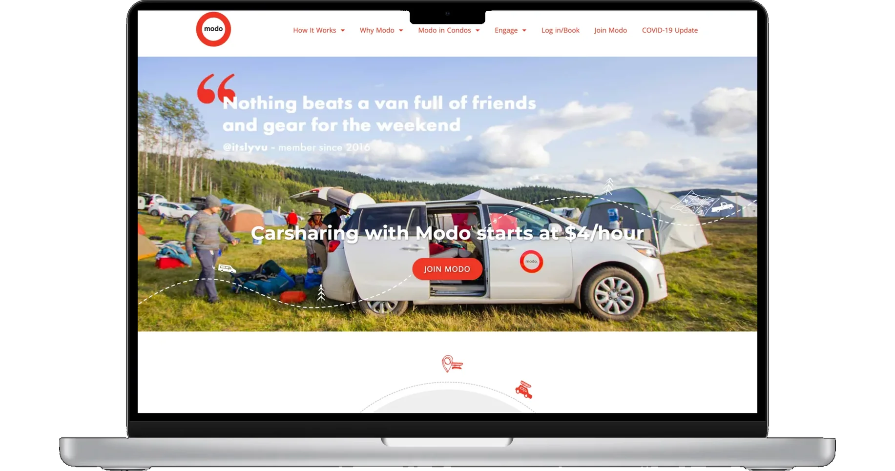
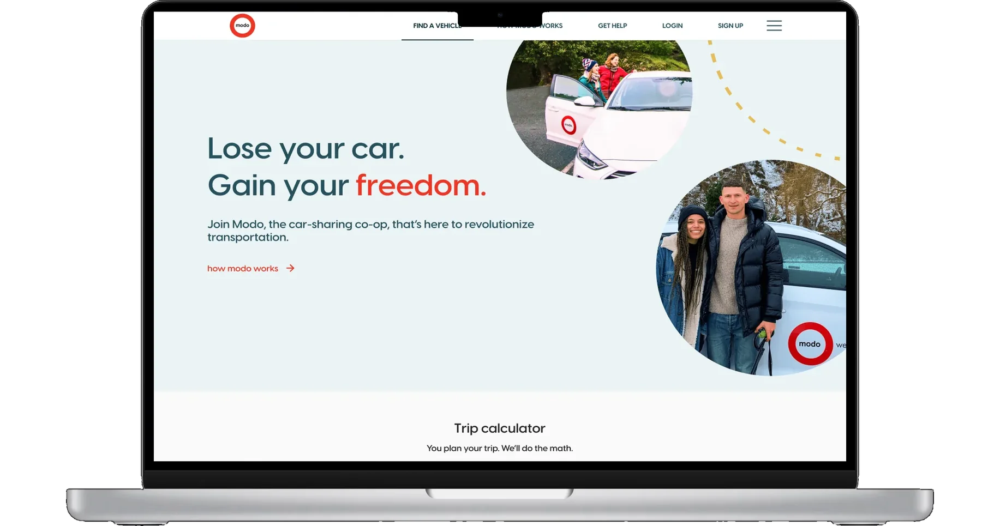

Modo: B2C Site Redesign
Rebuilding the website for Vancouver's largest B Corp car sharing coop so new members could find their way to a booking, and the marketing team could run the site themselves.

Problem
With many interest-holders editing it independently, Modo's site had become what the team called a 'franken-site': duplicated content, unclear navigation, tacked-on pages. It confused prospective members and added to Help team queries.
Modo asked All Purpose Creative to re-platform and redesign it alongside a brand and app refresh.
01Discovery
The first thing I did was look at what everyone else in car sharing was already saying, to work out what Modo could say instead.
Discovery covered seven interest-holder interviews, six competitor sites, a survey of 28 non-members and a partial content audit. We then mapped journeys across seven audience segments.

02Restructure
The content was regrouped into the five things a prospective member actually wants to know: how it works, why Modo, what it costs, which cars, and how to join.
I led the IA, page by page: five direct-to-page buttons and three action-based drop-downs, 'Use Modo', 'Meet Modo' and 'Living with Modo', giving each piece of information a place to nest. I also regrouped the FAQs by who's asking: a member needing urgent help, or someone looking to join.


1 203Test
Vehicle specs put off anyone who isn't a car person, so the fleet was grouped by use case rather than by vehicle.
In five moderated sessions with non-members, most tried to click 'How Modo Works' from the hero. So it became a launching-off page: how to join, the plans for personal and business use, the kinds of car you'd get access to, and what's always included, like gas, damage coverage, parking and cleaning.
It was still a lot of content, but far less than the old site had. Testing showed it was easy to digest once it was broken into cards and paired with pictograms, most of which I designed with another designer on the team.
04Build
Most of the site was built in Webflow so Modo's marketing team could run it without a developer, but the car selection and map tool had to be coded.
I ran check-ins with Jason Landry, the developer, so what I designed matched what could be built. The map was noisy for people who don't think about cars, but Modo wanted accurate vehicle icons. We chose clarity for users.
05Launch
The Modo team told us there was a significant decrease in Help Desk calls.
The site is clearer, the new member journey is shorter, and it lines up with the app and the coop's brand. The work continued as a maintenance engagement.


Try it: step through the FAQs, then switch device ↓
Results
calls after launch*
*Reported by Modo's Help Desk team: members were finding what they needed on the site instead of calling.
Client
Mary is an incisive thinker and creative problem-solver. When it came to designing a clear flow for new members to learn about carsharing, Mary brought empathy and pragmatism and supported the delivery of a successful project.
Jane Hope, Director of Marketing & Communications, Modo
What I learned
The site didn't have a navigation problem, it had a content problem. Once we agreed on the five things a prospective member needs to know, the IA and the menu became clear.